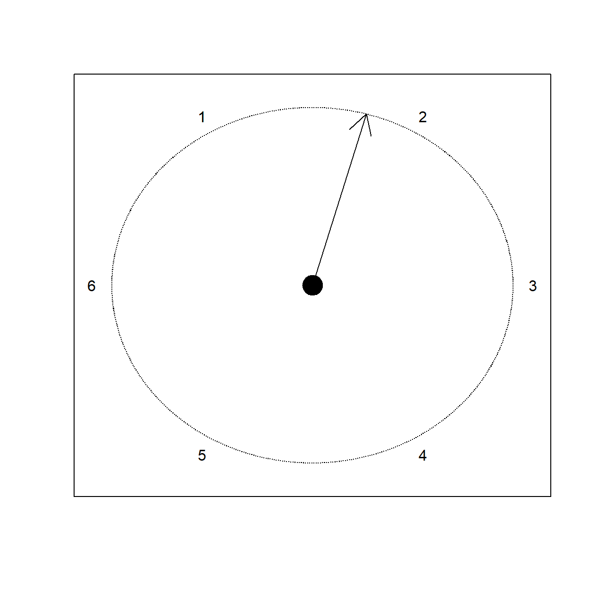
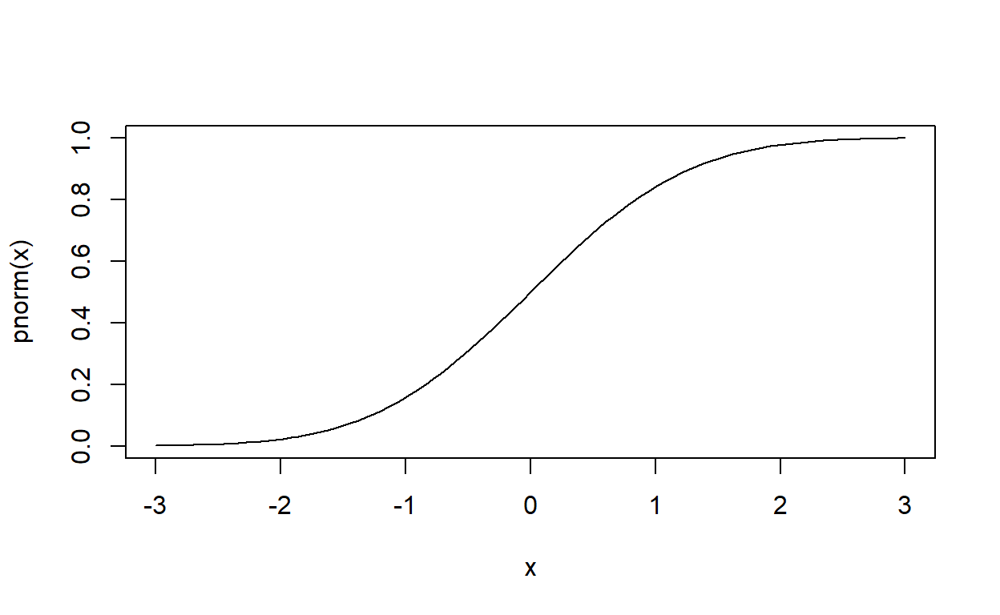
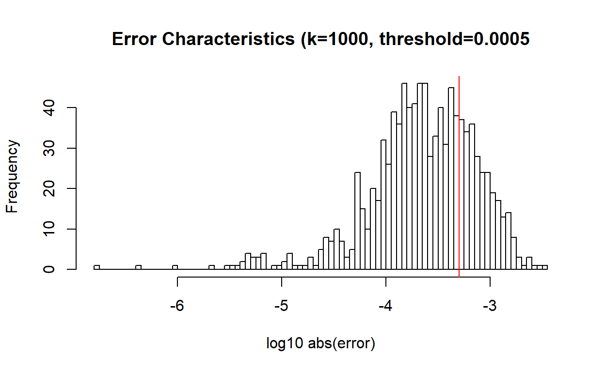
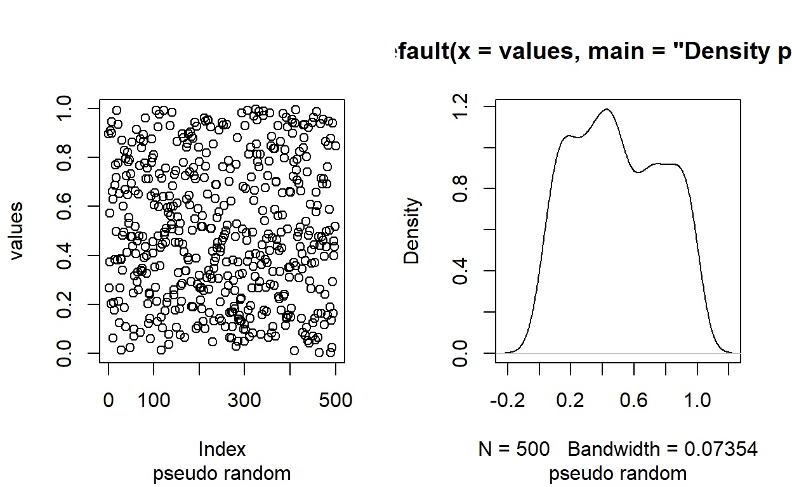

Distributions
A distirbution is a mathematical construction that is associated to a random variable. A distribution allows one to calculate the probability of an event occuring. Typically a distribution the manner in which a distribution is described depends upon whether or not the random variable in question is continuout or discrete (it’s possible to mix the two together but we are not going to do that here)
A stereotypical discrete distribution would be the result of rolling a fair 6-sided die:
\[ P(X=k) = 1/6 \quad(\textrm{for }k\in 1,2,\dots,6) \] The possible values for \(X\) are known as the sample space. In Introduction to Statitics it is common to symbolize this set with \(S\), but in more advanced courses it is more common to use \(\Omega\).
In the distribution described above, \[ \Omega=\left\{1,2,3,4,5,6\right\} \]
One could also consider a continous variable with equal probability of achieveing any value between 0 and 6. For personal reasons I prefer to use \[ \Omega=(0,6] \] You could think of this as the result of a spinner. I’ll label the start as 0

Here all values between 0 (not including 0) and 6 are possible. In order to make the math consistent we are forced to consider the probability of any specific value of \(X\) as being 0. Instead we need to ask about the probability of getting a range of values– this is more realistic than you might think…. it’s not as if you use infinite precision when making a measurement on a circle– typically some rounding takes place… In an extreme case we might always round to the nearest integer. On our spinner let’s think of the “6” as being the highest value… so if the spinner is pointing between 6 and 1 that’s actuall avalue between 0 and 1.
IN any event. This extreme rounding rebuilds our earlier distribution. But if we stay in the realm of mathematics and only allow ourselves to calculate probabilities for ranges of numbers, then we describe our distribution with a density curve:
To calculate the probability for \(X\) landing in a range of values, we just find the corresponding area under the curve.
So, for example the probability of getting a value between 2.5 and 3.1 is the shaded area below:
Such things are easy to calculate for a nice horizontal line… it’s a rectangular region with width \(3.1-2.5=0.6\) and height approximately \(0.167\)… so
\[ P(2.5 < X < 3.1) \approx 0.167*0.6=0.1002 \]
For the first distribution the results are discrete (not to mention finite), and we specify a specific probability for each possibility– you can think of that as a long-term proportion– if the random process associated to the variable were repeated over and over and over, in the long run the proportion of results equal to 1 would be $. The same would be true for any of the six values.
For the second sitution the notation \(X\sim\textrm{UNIF}(6)\) lets us know that the possible values for \(X\) are the values from 0 to 6. Saying that the \(P(2.5 < X < 3.1) \approx 0.1002\) can be interpreted to mean that over many, many repeated applications of the random process described by \(\textrm{UNIF(6)}\) about 10 percent of the time we will get values between 2.5 and 3.1.
These distributions are parameterized. Specifically there are one (or more) numbers known as parameters that control the exact shape and size of the curves (and hence influence the probabilities for various events )
Uniform distributions are parameterized by their upper and lower bounds. The density curve is alays a horizontal line sgement whose height is such that the total area encompassed by the line is 1. That’s why in our example the height is at \(1/6\approx 0.167\).
Our convention will be that if only 1 number is included the lower limit is taken to be 0. Hence \(\textrm{UNIF}(6) = \textrm{UNIF}(0,6)\).
Distribution Functions
I will consistently call the function used to determine probabilities for a distribution the PDF Some give different names to the function if the distribution is discrete– this makes sense because the way in which the formula is used to find the probabilities are different– in the discrete situation we use the traditional \(\textrm{INPUT} \rightarrow \textrm{PROBABILITY}\). For a continous distribution we use the area under the curve.
Regardless of whether or not the distribution is discrete or continous there is a continuous function known as the Cumulative Distribution Function (CDF). That tells the probability of getting a value at or below the argument. I will abuse notation slightly and let \(\textrm{CDF}_\textrm{X}\) represent the CDF for the distribution of the random variable \(X\).
\[ \textrm{CDF}_\textrm{X}(k) = \textrm{P}(X \le k) \] This function has all real numbers as its domain. It is monotonically increasing (not necessariy strictly inreasing though) and it ranges from 0 to 1.

In R the convention is dd at the beginning is the density. The p is the cumulative distribution. Some people think of this function as the better way to represent the distribution and they call it the distribution function (confusing isn’t it?). It’s pretty easy to use the CDF to calculate probabilities:
\[ \textrm{P}(a < X \le b)=\textrm{CDF}(b)-\textrm{CDF}(a) \]
In a discrete distribution \[ \begin{aligned} \textrm{P}(X=a) &= \textrm{P}(a-[\textrm{a bit}] < X \le a + [\textrm{a bit}])\\ &=\textrm{CDF}(a + [\textrm{a bit}])-\textrm{CDF}(a - [\textrm{a bit}]) \end{aligned} \]
This is more traditionally written
\[ \begin{aligned} \textrm{P}(X=a) &= \textrm{P}(a-\varepsilon < X \le a + \varepsilon)\\ &=\textrm{CDF}(a+\varepsilon)-\textrm{CDF}(a-\varepsilon) \end{aligned} \]
Useful summarizations
We are often concerned about a central tendency (aka… where is the middle) and about the dispersion or (how spread out) is the distribution.
The actual calculations of these values for continuous distributions is usually done with calculus (or even more interesting machinery like moment generating functions). Courses that ocver that material are not a requirement for this class, so we will, instead utilize the Monte Carlo Method
The basic idea:
- Draw lots and lots of random values that have the desired distribution
- Calculate the statistics on the sample
- Let the Law of Large Numbers ensure you’ll be close if your sample is large enough.
One nice trick is to accumulate random values repeatedly and check the computed statistic before and after the new data is added. When the before/after values of the statistic are sufficiently similar, then we stop and record our results.
You may recall that the mean (or expected value) is the “balance point” of the distribution. From this it should be clear that for \(X \sim \textrm{Unif(6)}\) the expected value should be \(\mathbb{E}(X) = \frac{0+6}{2}=3\).
On the other hand… what is the standard deviation?
(mathematical aside). For the mathematcally literate… you might recall that \(\textrm{SD}(\alpha X) = \left|\alpha\right|\textrm{SD(X)}\). It should also be clear that if \(X \sim \textrm{UNIF}(n)\) Then \(\alpha X \sim \textrm{UNIF}(\alpha n)\). So the standard deviation is completely determined by the length of the range of the uniform distribution. If we understand the standard deviation of \(\textrm{UNIF}(1)\) then we can figure ou the standard deviation of any of the other uniform distributions.
The actual formula for the variance is
\[ \textrm{VAR}(X)= \int_{-\infty}^{\infty} f(x)(x-\mathbb{E}(X))^2dx \] For \(\unif(1)\) the distribution function is
\[ f(x) = \begin{cases}0 &x \notin [0,1] \\1&x\in[0,1]\end{cases} \] so \[ \begin{aligned} \textrm{VAR}(X)&= \int_{-\infty}^{\infty} f(x)(x-\mathbb{E}(X))^2dx\\ &= \int_{0}^{1} (x-\mathbb{E}(X))^2dx\\ &= \int_{0}^{1} (x-0.5)^2dx\\ &= \int_{0}^{1} x^2 -x + 0.25\ dx\\ &= \left(\frac{1}{3} x^3 - \frac{1}{2} x^2 + 0.25 x\right) \bigg|_0^1\\ &= 1/3 - 1/2 + 1/4\\ &= \frac{4-6+3}{12}\\ &= \frac{1}{12} \end{aligned} \] And thus the standard deviation should be \(\sqrt{1/12} \approx 0.289\) End Aside
Monte Carlo Estimates
So.. we will use the runif() function to generate random values. We will do this, inefficiently– adding 1000 random numbers at a time. We will re-calculate the sample standard deviation each time. And only stop when our value shows less than a 0.0001 change in values. We will also record the values as we go along. We will round to three places.
NOTE: There is a real issue with converging too early. Even taking 100 at a time, and using a threshold of 0.000001 I’m still not always getting the exactly correct answer to 3 places every time… so be warned about the drawbacks of this procedure:
## [1] 0.28841Let’s try something a bit more clever– we’ll generate three sets of random numbers and stop when THEIR SDs are close. That way we have three independent assessments. Then our final prediction will either be the mean of those three, or the sd() of the pooled values. The two predictions should be close to the pooled sd() since the sample standard deviation is an unbiased estimator of the true standard deviation.
Again.. what I’m doing is terribly inefficient. This is just for the purposes of making things easier to following
We will want to choose a pool size large enough that the updates (each iteration of the while loop) don’t induce too large of a change…. otherwise we run the risk of the three independent standard deviations “meeting” too early. So I’ll use \(k=1000\) becaues it worked when I tested it.
## estimate n.iter
## 0.2887833 37.0000000I wondered how often the prediction woud be with 0.001 of the true answer. It takes awhile to run the simulation…

## [1] 265## [1] 81Turns out that answer, for my simulation, is near 8.1 percent.
It will probably come as no surprise that the predictions, do get closer to the true value with an increase in the number of iterations
It would be more common for people to perform the mutliple simulations (as I did above) and then generate an empirical 95% confidence interval on the results. (the 3-fold independent sets is not something that is commonly done however)
## 5% 95%
## 0.2877396 0.2895434Quasi Random Numbers
Rather than pseudo-random numbers many people find it more efficient to use quasi-random numbers These are also random numbers, but they have a more coverage of a space that has less clumping– so they tend to lead to faster convergence. In this case, without using any clever tricks like in the previous situation… most times the threshold was reached within 2 iterations.
## [1] 0.2886595Other distributions
We frequently use the uniform distribution as the basis for our simulations:
## Warning: In density.default(values, main = "Density plot for n=500") :
## extra argument 'main' will be disregarded
Versus:
We can convert a uniform distribution to any other distribution if we use the inverse of that distributions CDF (cumulative distribution function). This, of course, works slightly differently for discrete vs continous distributions…. In any event
It’s a bit hard to tell from first glance– but the places where the CDF are the steepest is where they cover the most \(y\)-values… and hence if we’re choosing uniformly random \(y\)-values we are more likely to select \(y\)-values near steep places. This means that the corresponding \(x\) values will tend to cluster under steeper portions of the \(\textrm{CDF}\).
Notice the use of qnorm (q is for quantile) which is the **inverse of pnorm().
R has built-in functions for generating random values from most interesting distributions… but if you want to use the quasi-random versions of those random numbers you still need to do it yourself.
Using the above code as a guide… generate 100 random normally distributed points using runif() AND qrng_get(). Produce both index plots and density plots of your output


Distributions
Other distributions, with which you should be familiar are the normal distribution which is parameterized by two numbers.
| Distribution | type | notes |
|---|---|---|
| Uniform | continous | spinner |
| Uniform | discrete | choosing with replacement |
| normal | continous | bell-shaped curve (two parameters) |
| t | continous | also bell-shaped but wider than normal distribution |
| binomial | discrete | Counting “successes” of independent, dichotomous trials with constant probability of success |
| Poisson | discrete | discrete, but infinite. Models number of random occurrences in a fixed time period |
| Gamma | continous | Continous version of factorial– suitably scaled |
Uniform
ADD DESCRIPTION
ADD EXERCISE
Normal
ADD DESCRIPTION Two parameters mean and standard deviation
Gamma Distribution
Related to the continuous version of the factorial function \(\Gamma(x)\). The \(\textrm{PDF}\) must be scaled to have a total area of 1.
This is the first continous distribution that has a right-skew. There are multiple ways to parameterize this function. We will use R’s default of
a: shapes: scale
If you are reading Wikipedia it uses \(k\) for the shape and \(\theta\) for the scale (this is consistent with the use of \(\theta\) in the exponential family discussion in the Mathematical Background document)
The domain is \((0,\infty)\)
The expected value is \(ks\).
The standard deviation is \(\sqrt{k}s\)
\[ \textrm{PDF}(x) = \frac{1}{s^a\Gamma(a)}x^{a-1}e^{-\frac{x}{s}} \]
Notice there are two places where \(x\) occurs. One is \(x^{a-1}\) so we have some sort of power function. The other is \(e^{\frac{x}{s}}\). This is an exponential decay function… it is, in a meaningful sense (Csci students… think big-Oh) more powerful than the power function and will drive the product to 0 as \(x\) goes to infinity (this is important for any function that hopes to repreent a density curve). The initial factor \(\frac{1}{s^a\Gamma(a)}\) is just there to ensure that the total area under the curve is 1.
As you play around with the values, remember that the balance point is at \(k*s\). So this will move the location of the “peak”. Changing the scale moves the peak and changes the spread.
Binomial Distribution
The five points Situations described by the \(B(n,p)\) distribution:
- Fixed number of trials. We call this number \(n\)
- The trials are independent.
- The result of a trial is either success or failure.
- There is a constant probability for success in each trial (we call this number \(p\))
- We are counting the number of successes
SO the two parameters are the number of trials, \(n\), and the probability of success \(p\).
This is a discrete distribution with
mean \(np\) std \(\sqrt{np(1-p)}\)
Because the distribution is discrete we will use a probability histogram to show the distribution: